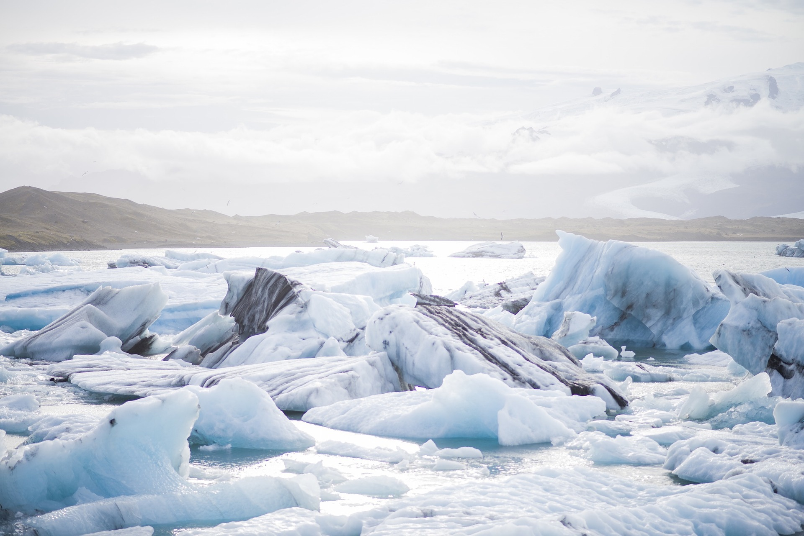
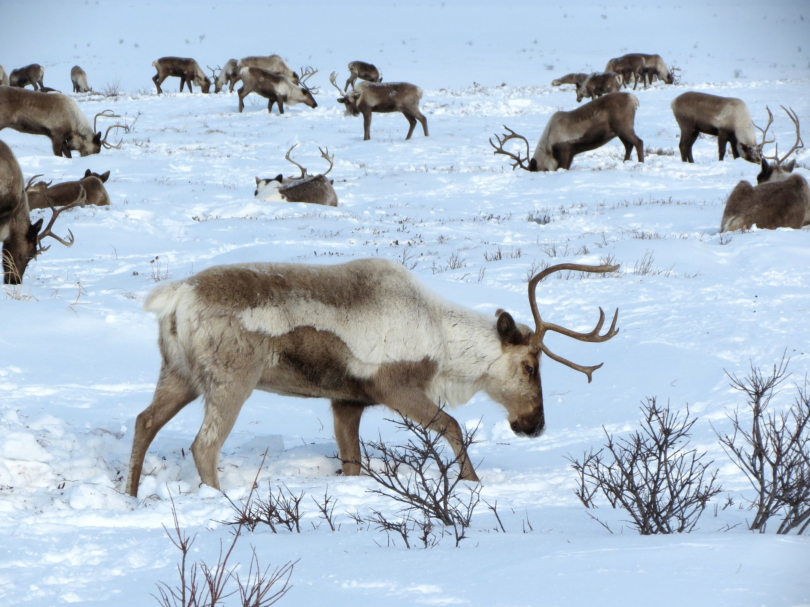

Nouvelle Bleue navigue depuis des jours au nord du Groënland.
Son mécanicien souhaite installler une lame brise-glace à l'avant du sous-marin ; en attendant, nous perçons l’eau froide quelques dizaines de mètres sous la banquise.
Alors que j'évite tant bien que mal la quille d'un iceberg, l'un des matelots propose :
- Et si nous allions voir du côté de l’Antarctique ? On connaît déjà bien l’Arctique !
- Oh non, proteste le moussaillon, c’est si loin ! Et puis, pôle Nord, pôle Sud, quelle différence ? Il fait froid, il y a de la glace et des oiseaux en costume…
J'interviens aussitôt :
- Détrompe-toi, les deux pôles sont très différents !
Commençons par le pôle Nord
Un océan polaire y gèle et forme une banquise bordée par la Scandinavie, la Sibérie, l’Alaska et le Canada puis le Groënland.
La glace dégèle l’été, sauf à quelques endroits où elle est si épaisse que l’hiver survient avant qu’elle n’ait eu le temps de se liquéfier totalement.
Une faune s’épanouit sur la banquise.
 Des pingouins, des phoques… et même des ours polaires !
Des pingouins, des phoques… et même des ours polaires ! Ils attendent que la surface de l’océan gèle pour venir y chasser. Pas de banquise, pas de poissons ! Ce mammifère mi-terrestre, mi-aquatique est dépendant de la glace de mer pour sa survie.
On trouve aussi des orques, qui nagent un peu partout dans le monde… Ce sont de redoutables prédatrices ! Elles mangent de petits animaux et même des baleineaux. Ils sont vaillamment défendus par leur mère.
Certaines espèces de baleines ne vivent qu’en Arctique, on dit qu’elles sont endémiques. C’est le cas de la baleine boréale. Il y aussi les bélugas à la peau laiteuse et des narvals autrefois chassés pour leur corne de licorne.
Toutes ces espèces sont menacées par la pollution et par le réchauffement climatique.
L’Arctique se réchauffe bien plus vite que le reste du monde et les animaux n’ont pas le temps de s’adapter à cette terrible hausse de température.
Cet océan est aussi
très fréquenté par les hommes. Vous y croiserez des bateaux de croisière et de campagnes scientifiques, mais aussi
des communautés autochtones.
Les inuits vivent surtout en Alaska, au Canada et au Groënland.
Ils s’installent sur terre et partent chasser le morse sur la banquise ou pêcher dans un trou.
Les Saamis vivent quant à eux en Laponie, au nord de la Scandinavie. Ce peuple est souvent chassé de ses terres par les autorités à la tête des pays qu’il habite. Il adopte alors un mode de vie nomade et se reconvertit dans l’élevage de rennes emmenés en transhumance de toundra en taïga… Une mosaïque de petits peuples habite enfin le nord de la Russie.

Les peuples circulent, mais aussi les masses d’eau !
De l’eau très salée venue du Pacifique entre par le détroit de Béring entre les îles Aléoutiennes au nord-est de l’Asie et l’Alaska en Amérique.
L’Atlantique s’immisce lui aussi en Arctique. Ses eaux très salées et relativement chaudes passent entre l’Ecosse et le Groënland, montent et contournent le Svalbard, un incroyable archipel situé très au nord. Puis elles traversent la mer de Barents et longent la côte Sibérienne… Il y fait si froid que
la banquise se forme. A mesure que l’eau gèle, elle expulse du sel qui se retrouve dans les eaux de surface. Celles-ci sont de plus en plus denses, de plus en plus lourdes... elles finissent par plonger en profondeur.
Ce sont les eaux profondes.
Elles glissent dans les abysses. Mais l'Arctique a le chauffage au sol ! Par endroits, des remontées de magma créent
des sources chaudes et des volcans sous-marins qui chauffent l’océan par le bas.
L’hiver suivant, de nouvelles eaux très denses sont formées en surface. Elles plongent et remplacent les anciennes eaux profondes, qui sont alors soulevées à des niveaux intermédiaires où elles patientent de longues années…
Une toute petite partie des eaux arctiques parvient à quitter cet océan semi-fermé en longeant le Groënland.
Finalement,
l’océan Arctique n’a que très peu de contact avec le reste du monde…

Ce n’est pas le cas des eaux qui bordent
l’Antarctique !
Au pôle Sud, tout est inversé. Les océans entourent un large continent. Il est recouvert d’
une calotte de glace qui mesure jusqu'à 4 km d’épaisseur.
A part quelques bases scientifiques et des explorateurs un peu fous, l’Antarctique est désert.
Pas d’homme en vue !
Mais il y a d’autres bêtes :
des léopards de mer et des éléphants de mer, des manchots empereurs et des manchots de Magellan, des albatros et encore des baleines !
Il fait très froid en Antarctique, bien plus froid que sur la mer qui borde le continent.
Le contraste thermique crée des
vents catabatiques qui soufflent violemment de la terre vers la mer.
Ils poussent la banquise vers le nord et la décollent des côtes le long desquelles la mer apparaît à l’air libre, dénuée de glace pour la protéger du froid polaire.
La mer se refroidit très vite et forme
de l’eau glaciale tout autour de l’Antarctique.
Cette eau est si dense qu’
elle cascade au bas d’une vertigineuse falaise sous-marine jusque dans les abysses. On l’appelle l’Eau Antarctique de Fond. Elle envahit les océans Atlantique, Indien et Pacifique et
met en mouvement toute la circulation globale !

Sans elle, il ferait plus chaud aux tropiques et plus froid dans les régions polaires.
La pollution resterait plus longtemps dans l’atmosphère. Le changement climatique s’accélèrerait…
Oui, le pôle Sud impacte l’ensemble de notre planète !